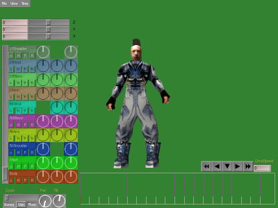
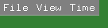
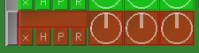
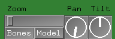
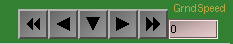
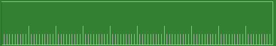

|
Ex
POSER:
A
TOOL FOR
ANIMATING
PLIB
CRITTERS.
|
The foot bone's connected to the leg bone,
The leg bone's connected to the knee bone,
The knee bone's connected to the thigh bone,
The thigh bone's connected to the back bone,
The back bone's connected to the neck bone,
The neck bone's connected to the head bone,
Oh, hear the word of the Lord!
-- Unknown (but incompetent) anatomist.

|
Introduction.
Exposer is a tool to allow you to perform fairly complex animations
of complex creatures with relative ease using the
PLIB Scene Graph API. Naturally,
Exposer is written using PLIB and generates output in several forms
that PLIB programs will find useful.
Exposer is totally unrelated to the Windows program 'poser'. The
name 'exposer' relates to the fact that this program used to be
called 'poser' until I heard of the existance of a Windows program
of the same name. This is therefore the ex-Poser program.
Exposer has a complex (but very powerful) GUI - you WILL need to
read this manual in order to take advantage of it.
Licensing.
Exposer is OpenSource software, issued under the terms of the
GNU Public License (GPL).
Installing and Running Exposer
First unpack the tarball containing the Exposer sources:
tar xzvf exposer-0.0.0.tar.gz
Then run the usual:
./configure ; make
(And you can optionally run 'make install' if you wish to fully
install the program rather than running it out of the installation
directory).
Then to run the program (without installing it) you could type
something like:
src/exposer
The program will prompt you to enter a 3D model file - the
ones in data with the extension '.ac' will do for starters.
Exposer can read any format that the PLIB library supports
that can contain both line and polygon objects.
So What Does It Do.
Well, right now, not a lot. The idea is that you can take an
arbitary polygonal model (typically of a person or animal of
some kind) and with minimal additional modelling effort be able
to animate it in your game or other interactive application.
The technique that exposer uses is 'skin and bones' animation
where the polygons of the model form the creatures 'skin' and
you model a set of line primitives inside the creature to make
a crude skeleton (the 'bones') much like the armature that a
sculptor would use.
Exposer therefore separates out the polygons and the lines in the
model you load (because your game will only be using the polygons)
and uses the lines to form a hierarchical structure of matrix
transformations. Exposer then assigns each vertex in the
skin to one of the bones (possibly more than one in the future)
according to distance - and then moves each vertex in accordance
with the matrix of the bone to which it's attached.
Exposer can optionally display each bone as a coloured cuboid and
provides a Heading/Pitch/Roll dial for each of them - but typically,
you'll only want to view the 'skin' - and that's the default.
By playing
with the coloured dials, you can move the bones in any way you like and
the skin will try to follow that movement as smoothly as possible.
One important issue is how the lines are assembled into a bone
heirarchy. Firstly, exactly ONE of the lines in the original
model must be painted RED. This bone is special because it's
the root of the bone hierarchy. Typically, this will be a
bone in the spine of a human or other mammal - but you might
choose it to be something else. You can "Make the Tail Wag
the Dog" by making the tailbone be the red one!
Once the program has found that red 'root' bone, it looks
for other lines that have one or other of their vertices
touching the root bone. Other lines can connect to the
root somewhere other than at the ends of that red line,
but your non-root bones MUST connect to it at their ends.
The program allows a 1% tolerance on this positioning so
bones don't have to be EXACTLY touching - but they do have
to be VERY close.
So, now we have the root bone and some other bones connected
to it - and now the program proceeds to expand out the
skeleton by treating all of the newly connected bones as
'root' and proceeding recursively from there.
In a sense, it's like reading the lines of the song at
the top of this page backwards:
The back bone's...the RED bone,
The thigh bone's connected to the back bone,
The knee bone's connected to the thigh bone,
The leg bone's connected to the knee bone,
The foot bone's connected to the leg bone
...although if it were me, I'd want a pelvis-bone and for
the sake of graphics, there wouldn't need to be a knee bone.
So, that's more or less it.
Controls.
Having loaded your first model, you'll see something like this:

The rather nice shade of green is my favorite colour. If
you prefer shock-pink...bad luck - that's what source code
is for! The 3D model sits in the middle of the screen with
the GUI widgets floating in front of it.
Let's go through the GUI controls piece by piece:
The Menu Bar.
In the top-left, there is a pretty standard menu bar,

The 'File' menu allows you to replace the model you are
working on with another, it also allows you to load
and save 'bone' files - which contain everything you
create in Exposer. Generally, these Bone files have
the same filename as the 3D model but with the extension
".bones". Exposer will fill that filename into the
file selector box - so you probably only have to hit "OK"
to load and save.
The 'View' menu lets you zoom into and out of the 'timeline'
which we'll come to later. The 'Time' menu has other
'timeline' operations.
The Bone Dials
To the left of the window are the bone dials - each coloured
row of GUI widgets represents one of the bones in your model.

The button marked 'X' resets all of the angles of the bone
to zero - which will always be how your model was posed when
you created it. The 'H', 'P' and 'R' buttons let you freeze
and hide any of the three dials that you don't want to use
for that particular bone. This is useful for joints like
your elbow that can only flex in one degree of freedom.
The three dials represent the heading, pitch and roll
angles of the joint at the end of that bone nearest the
top of the bone connection hierarchy.
The rectangular area above the 'X/H/P/R' buttons can
be used to enter a short text string to identify the
bone. These strings are saved when you write out the
bone data and your application program might want to
read them to help identify what's what.
If you have more bones than will conveniently fit on the
screen, the scroll-bar to the left of the bone widgets
will allow you to scroll them up and down.
View Control
In the bottom-left corner of the screen are some
view controls. These can be used anytime to change
the view you have of the model - but they don't change
any actual data in the model or it's bones.

You can also use the 'Zoom' slider to move the model
closer or further away, and there are buttons marked
'Skin' and 'Bones' that let you toggle the display of
each of those things - so you can see just the skin,
just the bones or both. (Or neither if you are
particularly perverse!). The initial default is to
show just the skin.
The 'Pan' and 'Tilt' dials allow you to move your
eyepoint around the model to view it from all sides
as it animates.
VCR Controls
In the bottom-right corner of the screen, there
are some VCR-like controls to play the animation,
pause it, play in reverse and to play at triple-speed
in forward or reverse.

You cannot adjust any joint angles in the model when
the animation is playing - so be sure to press the
downward arrow (STOP!) when you want to do editing.
The TimeLine
This is a large rectangle taking up most of the bottom
edge of the screen:

It has a number of functions, it starts up as a view
of a 10 second animation. Seconds are indicated by
the long tickmarks, tenth seconds by the short ones.
You can zoom into or out of the view or reset to seeing
the entire timeline using the 'View' menu in the menubar.
If you are zoomed into the timeline, a slider will appear
to allow you to scroll it left and right.
Magenta lines that extend across the full height of
the timeline indicate "events" - each event is a point
in time at which you have set the bone joint angles.
You can add an event by selecting 'Add an Event' in
the 'Time' menu and then clicking somewhere onto the
timeline to position it. One they are positioned, you
can click and drag events up and down the timeline to
change when they happen.
To change an event, click on it and it'll flash to
indicate that you have it selected. Then you can
adjust it using the bone dials.
Various operations on the 'selected' event are
available from the 'Time' menu.
You can also select a 'region' by left-clicking
on one end and right-clicking on the other. The
current region is highlighted in yellow. There
are operations that operate on the current region
in the 'Time' menu.
Wherever you click the left button on the timeline,
the model will move to that position - and the bone
dials will follow. You can drag the mouse up and
down the timeline to replay the animation at whatever
speed you move the mouse. However, to get a 'realistic'
playback speed, use the single arrows on the VCR
menu.
Remember though that you can only EDIT the position
of the model on a selected event.
Menu Operations on the Timeline.
The 'Time' menu allows you to add an event,
delete the selected event, delete ALL the events
in the 'region' that you have highlighted,
or delete the section of time in the 'region' -
compressing up the rest of the timeline to fit.
Finally, you can add more time to the timeline
so that you can create animations that are longer
than the ten seconds initially provided.
The Exposer ".bones" file format.
This is a very simple ASCII text file - however
the parser for it is VERY crude at this stage.
The first line of the file is:
NUMBONES=17 NUMEVENTS=7 MAXTIME=10.0000
So there are 17 bones, 7 events - and the maximum
duration of the animation is ten seconds.
Then follows the bones - one per line:
BONE "bone-name" HPR
The 'bone-name' is the string you entered beside the
bone dials. The 'HPR' part sets which axes are frozen.
(in this case, none of them...the frozen axis letters
are replaced by dots).
After all the bones come the events. For each event
there is a header line:
EVENT 3.0000 17
The first number is the time (in seconds) at which the
event occurred, the second number is the number of bones
that are affected by this event. Currently this must be
the same as 'NUMBONES'.
After the event header, there is one line per bone
containing the three joint angles in degrees for
that bone at that time:
(90,45,37)
That's it! However, as I said - the parser is 'brittle'
and very intolerant of errors - edit the file at your
own peril!
Some Advice
Bones don't necessarily have to be placed where the
bones would be in an anatomically correct version of
the critter. In the example 'dog.ac' file, there is
a tongue-bone and two ear-bones - and there are no ribs,
spinal vertibrae, etc.
You'll also probably need to hop back and forth between
your modeller and exposer to position the bones how you
want them. You'll find on occasions that the algorithm
that causes exposer to attach a skin vertex to the nearest
bone will sometimes result in part of a character's stomach
being attached to their hand or something. If that happens
then you might try splitting up some of the longer bones
in the arm into shorter ones - or adding some lateral bones
in the stomach to ensure that there is always one attached
to the spine that's closer to the skin than the hand is.
Artists should be encouraged to model the character in
a position with their legs wide apart and their arms
fully outstretched to minimise this kind of problem.
Using the axis freeze buttons to isolate only those
axes through which a real joint can rotate is very
useful. A human elbow joint can really only
rotate through one axis and turning off the other two is
helpful.
You can also use Exposer for things other than animals.
You could model plants bending in a heavy wind - or
even flexible things like flags or clothing.
Steve J. Baker.
<sjbaker1@airmail.net>